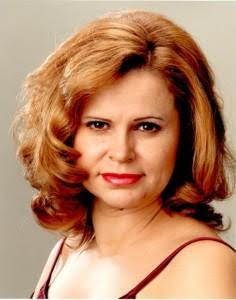

O mnie
Dr Karin Wiktor-Kałucka ukończyła Akademię Muzyczną w Katowicach, swoje życie zawodowe związała z Operą Krakowską. W swoim repertuarze posiada blisko 40 ról operowych, operetkowych, musicalowych i partii solowych muzyki sakralnej, m.in.: Oscar w "Balu maskowym” G. Verdiego, Hrabina w "Weselu Figara” W. A. Mozarta, Pamina i Papagena w "Czarodziejskim flecie” W. A. Mozarta, Norina w "Don Pasquale” G. Donizettiego, Siebel w "Fauście” Ch. Gounoda, Micaela i Frasquita w "Carmen” G. Bizeta, Musetta w "Cyganerii” G. Pucciniego, Saffi w "Baronie cygańskim” J. Straussa, Ciesca w "Gianni Schicchi” G. Pucciniego. Na różnych etapach pracy zawodowej szkoliła swoje umiejętności wokalno-techniczne pod okiem wielu wybitnych śpiewaków i pedagogów. Byli to m. in.: Teresa Żylis-Gara, Helena Łazarska, Anna Kościelniak, Krystyna Tyburowska, Christian Elssner, Dariusz Grabowski czy Ryszard Karczykowski.
Poza Operą Krakowską współpracowała z Operą na zamku w Szczecinie, Teatrem Wielkim w Łodzi, Krakowską Operą Kameralną, Filharmonią Rzeszowską, Orkiestrą Straussowską, Krakowskim Zespołem Kameralnym.
W swojej działalności artystycznej pracowała z wieloma wybitnymi dyrygentami m.in.: Ewą Michnik, Marianem Lidą, Tadeuszem Kozłowskim, Andrzejem Straszyńskim, Antonim Witem, Kai Bumannem, Piotrem Sułkowskim, Tomaszem Tokarczykiem, Rafałem Delektą, Tomaszem Chmielem, Rollandem Baderem, Jackiem Bonieckim, Sebastianem Perłowskim, Warcisławem Kuncem oraz Vladimirem Kiradijewem. Występowała na scenach Niemiec, Belgii, Holandii, Słowacji, Szwajcarii i Anglii.
Poza aktywnością artystyczną prowadzi działalność pedagogiczną w Akademii Muzycznej w Krakowie i ZPSMuz w Krakowie. W roku 2019 obroniła pracę doktorską a tym samym otrzymała tytuł - Doktora Sztuki, w dziedzinie artystycznej: sztuki muzyczne.